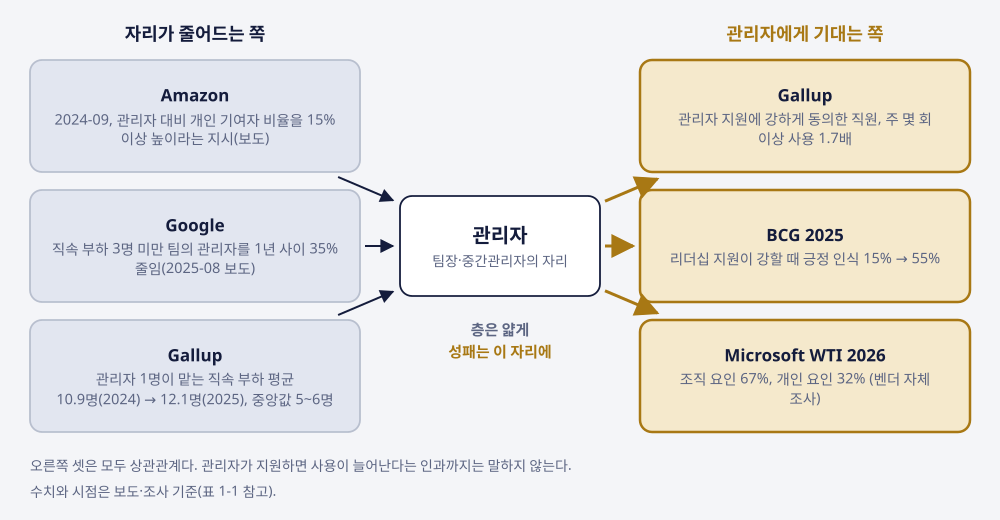
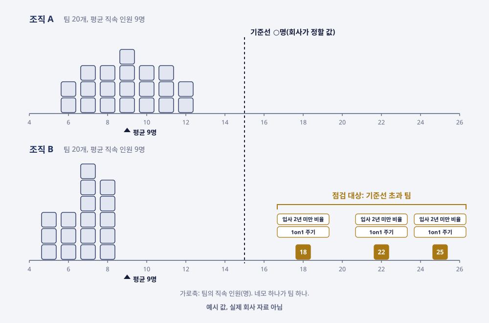
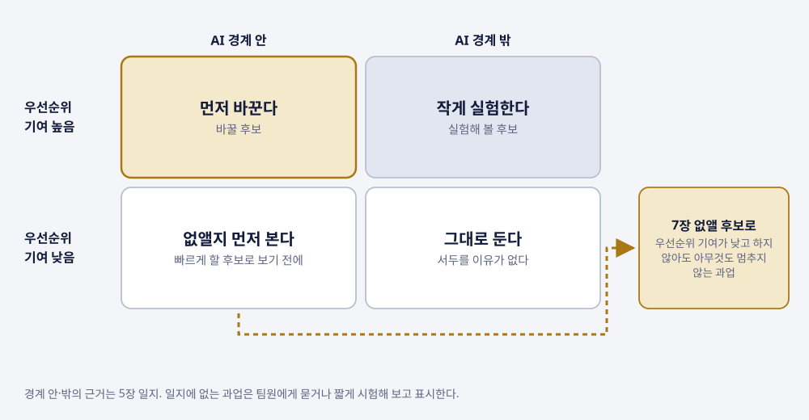
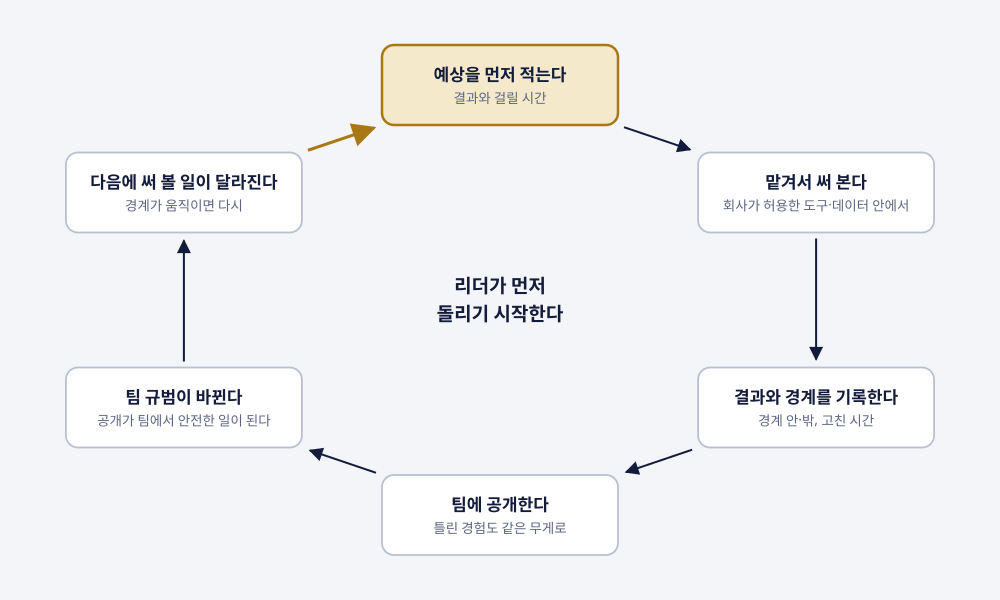
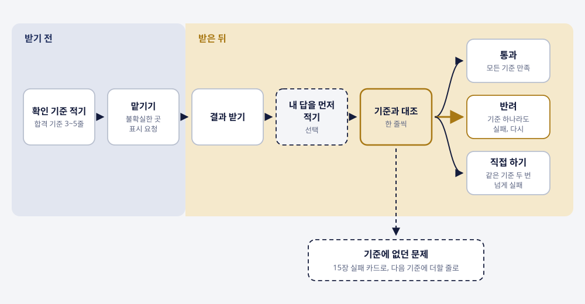
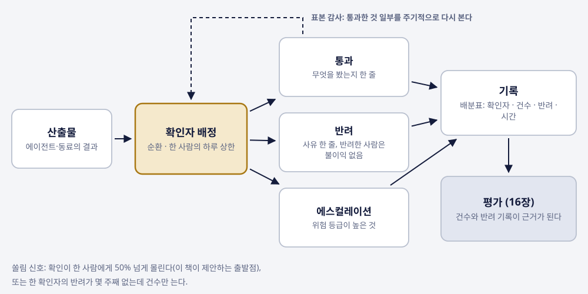
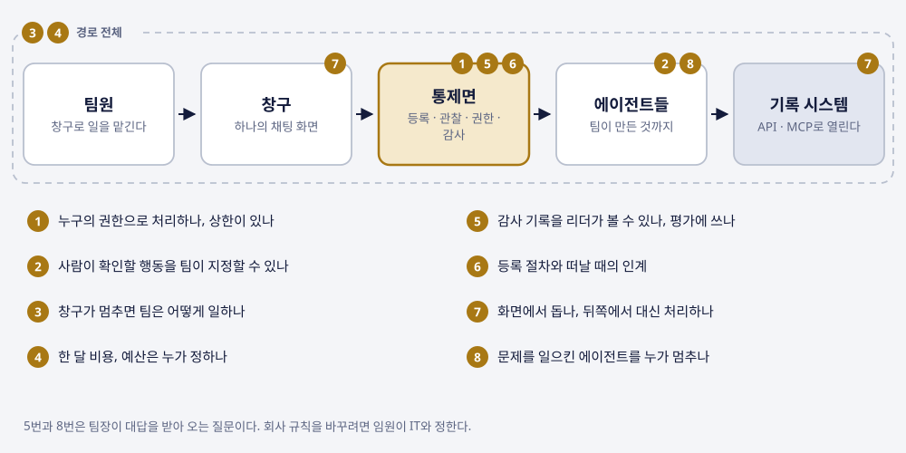
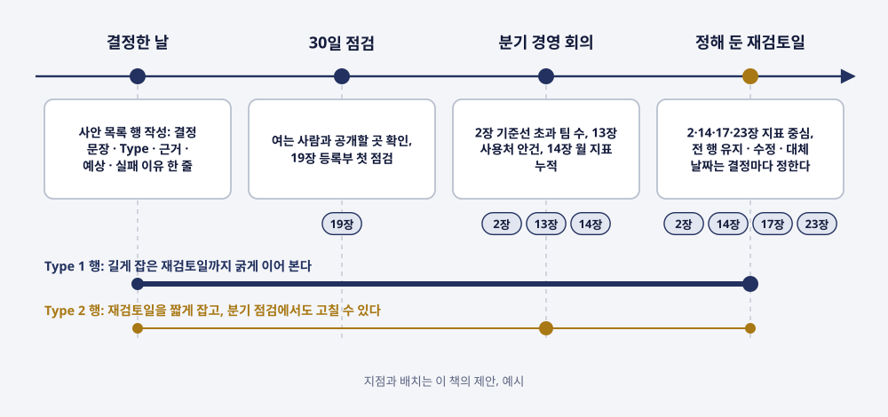
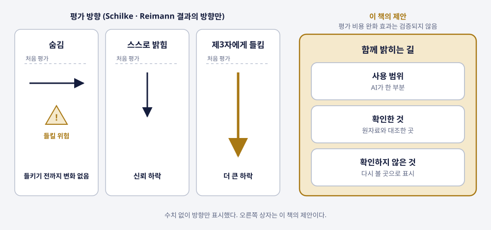
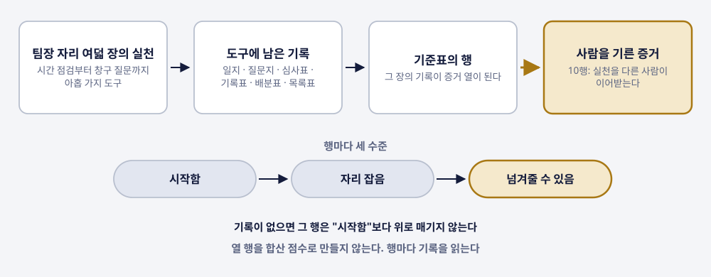

코드 너머
AX 리더십 완성
에이전트에게 맡기는 나, 팀을 이끄는 팀장,
제도를 정하는 임원
"AI 없이는 일이 돌지 않는 조직에서 리더는 무엇을 하는가."
이 책이 세 자리에서 차례로 묻는 질문

도구 하나가 빠지면 하루가 돌지 않는 사람
2026년 11월 7일, 업무용 Mac을 새것으로 바꿨다. Claude의 도움으로 일하던 환경을 다 복원했다.
그런 사람이 팀에 한 명일 때와 열 명일 때, 리더가 할 일은 같을까?
서문. 세 자리에서 같은 질문을
Stanford AI Index 2026이 인용한 McKinsey 조사에서 조직 단위 AI 도입은 88%(2025년 데이터)였고, Gallup AI 지표에서 업무에 AI를 매일 사용하는 미국 근로자는 15%(2026년 5월 기준)였습니다. 들인 것과 쓰는 것 사이의 간격을 누군가 함께 메워야 합니다. 이 책은 그 질문을 실무자, 팀장, 임원의 자리에서 차례로 묻습니다.
세 자리가 하는 일은 셋으로 모인다: 고르고, 확인을 나누고, 기른다
23장을 지나고 보면 대답은 세 가지 일로 모인다. 무엇을 AI와 함께 돌릴지 고르는 일, 누가 결과를 확인할지 나누는 일, 그 일을 다음번에 맡을 사람을 기르는 일이다. 실무자는 자기 업무 목록에서, 팀장은 팀에서, 임원은 회사의 제도에서 한다.
맺음말 「다음 월요일에 할 일」과 22장 「1장의 모순으로 돌아가서」, 13장·20장에서 옮겼다. 근거가 있는 부분과 이 책의 제안을 문장 단위로 나눠 적었다.
7부 23장, 각 부 안은 실무자에서 팀장, 임원 순서로
일곱 부는 저마다 질문 하나를 맡고, 부 안의 장은 실무자, 팀장, 임원의 자리 순서로 놓였다. 한 부 안에서 장을 차례로 읽으면 한 문제가 한 사람의 책상에서 팀을 거쳐 경영 회의까지 가는 길이 보인다.
| 부 | 실무자 | 팀장 | 임원 |
|---|---|---|---|
| 1부 「관리 층이 줄어드는 시대의 리더」 | 1장 | 2장 | |
| 2부 「직접 써 보고 맡길 일을 고르는 리더」 | 3·4장 | 5·6·7장 | |
| 3부 「에이전트의 결과를 확인하는 리더」 | 8·9장 | 10장 | |
| 4부 「아낀 시간과 도운 일을 성과로 잇는 리더」 | 11장 | 12장 | 13·14장 |
| 5부 「기록하고 밝히고 결과로 평가하는 리더」 | 15장 | 16장 | 17장 |
| 6부 「조직 에이전트와 결정을 기록하는 리더」 | 18장 | 19·20장 | |
| 7부 「다음 리더를 기르는 리더」 | 21장 | 22장 | 23장 |
장마다 끝에 도구가 있고, 두 주제를 함께 다루는 2·4·8·10·14·15장에는 둘이다. 실무자의 장에는 개인 도구, 팀장의 장에는 팀장이 꺼낼 도구, 임원의 장에는 「팀장이 들고 올 것」 한 줄과 임원판 결정 문장, HR판 운영 양식. 자기 자리의 장부터 읽어도 된다(표 서-1).
관리 층이 줄어드는 시대의 리더
관리 층이 줄어들 때, 그 층이 하던 일과 자리를 지킨 리더의 시간은 어디로 가나? 팀장은 자기 시간을, 임원은 구조를 정한다.
- 1장. 관리자를 줄이면서 관리자에게 맡긴다 · 팀장
- 2장. 관리 층을 줄이기 전에 그 층이 하던 일의 갈 곳과 관리 범위를 정한다 · 임원
예측 하나: "Through 2026", 바로 올해다
"Through 2026, 20% of organizations will use AI to flatten their organizational structure, eliminating more than half of current middle management positions."
Gartner 전략 예측, 2024년 10월. 원문 보고서는 공개 페이지로 열리지 않아 보도로 확인한 문장
2026년 11월 현재, 이 예측이 얼마나 맞았는지 측정한 데이터는 이번 조사 범위에서 찾지 못했습니다. 예측은 그대로 서 있고, 확인은 아직 오지 않았습니다.
한쪽은 관리자를 줄이고, 다른 쪽은 관리자를 변수로 꼽는다

관리자 효과 근거(Gallup·BCG·Microsoft WTI)는 모두 상관관계이고, Microsoft WTI는 벤더 자체 조사다. 이 책은 이런 수치를 "~할수록 ~했다"로만 쓴다. 도구: 한 주 시간을 다섯 범주(행정·당면 문제, 사람 육성, 일 재설계, 확인·검토, 직접 AI 사용)로 적는 리더 시간 점검표.
경쟁사 발표 읽기: 명분은 층과 관료제였다. AI 언급 열은 비어 있다
| 회사 | 시점 | 명분으로 내건 문구 | AI 언급 | 출처 성격 |
|---|---|---|---|---|
| Amazon | 2026년 1월 | "reducing layers, increasing ownership, and removing bureaucracy". 약 16,000개 역할, 미국 직원 대부분에게 사내 재지원 90일 | 메모 본문에 없음. AI와 엮은 것은 보도의 해석 | 1차(회사 공식 페이지) |
| Intel | 2025년 4월(메모), 7월(실적 발표) | "eight or more layers deep", "about 50% of the layers" | 명분 문구에 없음. 실적 부진 대응이 주 맥락 | 2차(보도) |
| Microsoft | 2025년 4~7월 | "reducing layers with fewer managers"(CFO 실적 발표 발언의 보도 인용) | 인용된 문구에 없음 | 2차(보도) |
| 2025년 8월 | 직속 3명 미만 소규모 팀 관리자 35% 감소. "so we don't solve everything with headcount"(CEO) | 인용된 발언에 없음 | 2차(전 직원 회의 녹음 보도, 기준은 익명 소식통) |
근거 표시 근거가 받치는 문장은 "AI 시대에 관리 층을 줄이는 결정이 이어졌다"까지다. "AI가 관리 층을 줄였다"는 출처가 받치지 않는다. 경쟁사 발표는 무엇을 셌나, 명분에 AI가 있나, 원문인가 보도인가, 어떤 사정이었나부터 확인한다.
줄인 층의 일: 예외는 위로, 확인은 옆으로, 육성은 끊긴다

근거 표시 화살표의 방향은 Wulf의 관찰과 Garicano의 정의를 이은 이 책의 추론이고, 측정한 값은 없다. 도구: 관리 층 조정 사전 심사서(질문 5개). 팀장이 들고 올 것 1장 리더 시간 점검표의 범주별 합계(4주분).
평균이 같아도 꼬리가 다르다. 점검은 가장 큰 팀에서 시작한다
그림 2-2. 평균이 같고 꼬리가 다른 조직 2곳(예시 값)
근거 표시 예시 값이다. 기준선을 넘는 팀 가운데 입사 2년 미만 비율이 높은 팀부터 1on1 주기와 육성 시간을 본다는 것은 점검 순서를 정하는 이 책의 제안이다. 주니어가 많은 팀이 실제로 더 나빠진다는 측정은 없다. 팀장이 들고 올 것 1장 리더 시간 점검표의 "사람 육성" 시간 비율, 10장 1on1 대화 카드의 실행 주기.

직접 써 보고 맡길 일을 고르는 리더
무엇을 맡기고, 무엇을 바꾸고, 무엇을 없앨지를 무엇으로 고르는가? 실무자는 자기 업무 목록에서, 팀장은 자기 손으로 먼저 겪은 뒤 팀의 업무 목록에서 고른다.
- 3장. 맡길 일은 확인할 수 있는 일부터 고른다 · 실무자
- 4장. 끝나는 조건과 확인할 순서를 정해 맡긴다 · 실무자
- 5장. 리더가 먼저 써 본다 · 팀장
- 6장. 바꿀 일을 고르는 사람과 기준을 정한다 · 팀장
- 7장. 자동화하기 전에 없앨 일을 고른다 · 팀장
들쭉날쭉한 경계: BCG 컨설턴트 758명, 같은 사람과 같은 AI인데 결과가 갈렸다 (Dell'Acqua 외)
Organization Science 2026년 3월 게재본 초록 기준, 사전 등록 실험. 팀장 자리의 5장은 같은 결과를 2023년 작업논문 초록에 따라 "19%포인트"로 적는다. 실험에 쓰인 AI는 2023년 4월 무렵의 GPT-4. 오래 남을 것은 19%라는 값보다 경계가 들쭉날쭉하다는 구조다.
두 가지 예상: 확인 비용이 만드는 비용보다 작은가 × 내가 이 일을 AI보다 잘하는가

"It's absolutely amazing for everything where validation effort isn't large in comparison to creation effort."(Anthropic 자사 직원 조사의 면담 응답 한 사람, 벤더 조사) 네 칸 틀은 이 책의 제안이고, 이 기준을 시험한 실험은 아직 없다. 도구: 경계 기록표(업무 10줄에 맡김·함께·직접·보류).
맡긴다는 것은 끝을 정해 주는 것이다
"make sure it knows what done looks like, can check its own work, and can only touch what it should. Give it a cap on turns or spend, and have a person approve the result at the end."
맡긴다는 것은 일을 넘기는 것이 아니라 끝을 정해 주는 것이다.
Anthropic 개발 도구 공식 문서(날짜 표기 없음, 2026-11 열람) · 아래 문장은 이 책이 제안하는 정의
무엇을 해 달라는지는 누구나 씁니다. 무엇이 되면 그만해도 되는지, 무엇을 만나면 손을 멈추고 돌아와야 하는지는 잘 쓰지 않습니다. 끝나는 조건은 잘 풀렸을 때의 도착점이고, 멈출 조건은 꼬였을 때의 비상구입니다. 도구: 맡김 메모 9개 항목(넣지 않을 정보·끝나는 조건·멈출 조건은 비우지 않는다).
병렬의 병목은 확인이다: 순서 규칙 셋
가상 사례. 에이전트 3개에게 조사·표·기획안 초안을 맡긴 오후, 가장 보기 쉬운 표부터 열었다. 초안은 훑어보고 팀장에게 보냈다. 4시쯤 초안의 기능 하나가 조사 자료 어디에도 없다는 것을 알았다.
세 규칙은 이 책의 제안이다. "That requires knowledgeable review, not casual inspection."(Greyhound Research 분석가 Sanchit Vir Gogia, CIO 2026-05 기사, 분석가 의견) 도구: 확인 대기열. 확인 중 칸이 정한 수를 넘으면 새로 맡기지 않는다(처음엔 2로 시작).
공개하면 손해, 숨기면 더 손해: 규범을 바꾸는 가장 싼 수단은 리더의 공개
과제: 이번 주 팀 회의에서 5분만 내어 AI에 맡긴 일 하나와 AI가 틀린 일 하나를 이야기하자. 잘된 일만 말하면 시범이고, 틀린 일까지 말해야 공개다.
예상을 적고, 기록하고, 공개하고, 규범이 바뀐다

도구: 리더 2주 직접 사용 일지. 열은 맡긴 일, 맡기기 전 예상(결과·걸릴 시간), 실제 결과, 경계 안·밖, 고친 시간, 팀에 공개했나.
두 기준: 우선순위 기여 × AI 경계

"Productivity gains alone won't create ROI for companies investing in generative AI."(Bain, 「Zero-Based Redesign」, 2024년 8월) 첫 번째 질문은 "이 일이 올해 우리 팀의 목표에 얼마나 걸려 있나"이고, AI로 바뀔 수 있는지는 두 번째 순서다. 도구: 업무 선택 질문지.
36년 전에도 같은 질문: "Don't Automate, Obliterate", Ford 외상매입금 부서
Michael Hammer, HBR 1990. 20%는 "어떻게 더 빨리 할까"에서, 75%는 "이 일을 왜 하고 있나"에서 나왔다. 이 결말에서 일이 사라졌는지 사람이 사라졌는지가 흐려진 것이 다음 장면의 시작이다.
세 자리를 부르고, 4주 멈춰 보고, 다섯 갈래로 정한다

없앤다 → 합친다 → 줄인다 → 자동화한다 → 그대로 둔다. 자동화는 앞의 셋을 지나고 나서 고르는 갈래다. 누가 없앨 때 결과가 좋은지는 실증 연구를 찾지 못해 이 책의 제안이다. 도구: 없앨 일 심사표.
에이전트의 결과를 확인하는 리더
에이전트가 낸 결과를 누가, 무엇을 기준으로, 얼마의 시간을 들여 확인하는가? 실무자는 받기 전의 기준과 넘길 때의 확인 내역을, 팀장은 확인하는 사람들을 이끄는 법을 정한다.
- 8장. 확인 기준은 받기 전에 적고, 넘길 때는 확인한 것을 함께 적는다 · 실무자
- 9장. 직접 해 보는 시간을 일정표에 넣어 판단력을 지킨다 · 실무자
- 10장. 확인하는 사람들과 사람·에이전트가 섞인 팀을 이끈다 · 팀장
설명보다 생각하게 만드는 장치: 사람을 멈춰 세우는 신호와 절차
| 연구 | 장치 | 효과 | 대가·단서 |
|---|---|---|---|
| Kim 외, FAccT 2024 (N=404, 사전 등록) | 1인칭 불확실성 표현("I'm not sure, but...") | 확신과 동의 경향 감소, 정확도 상승, 과의존 감소 | 과의존이 완전히 없어지지는 않았다 |
| Buçinca 외, CSCW 2021 (N=199) | 인지 강제 장치(먼저 판단하기) | 설명보다 과의존을 더 줄임 | 참가자들이 가장 싫어함 |
| Haynes 외, NEJM 2009 | 19개 항목 수술 안전 체크리스트(8개 병원) | 사망률 1.5%→0.8%, 합병증 11.0%→7.0% | 전후 비교, 저자도 "associated with". 형식만 빌린다 |
| Parasuraman·Manzey, Human Factors 2010 | 해당 없음(자동화 편향) | 초보자와 전문가 모두에게 나타남 | 훈련이나 지시만으로는 막을 수 없다 |
표 8-1 발췌. 적절한 의존은 마음가짐보다 절차에서 나온다는 정리는 이 책의 것이다. 맡김 메모에 10번째 항목 "확실하지 않은 부분은 그렇다고 표시해 달라"를 더한다(이 책의 제안, 에이전트에게 요청하는 방식은 시험되지 않았다).
확인 기준 사전 작성표: 받기 전 5분, 받은 뒤 5분

"A good task is one where two domain experts would independently reach the same pass/fail verdict."(Anthropic 에이전트 평가 안내 글, 2026-01, 실무자 기준에 옮긴 것은 이 책의 적용) 받은 뒤에는 통과·반려(기준 번호로)·직접 하기 가운데 하나. 기준에 없던 문제는 다음 기준과 15장 실패 카드의 재료가 된다.
확인은 새로 생긴 일이다: 측정한 숫자와 느낌에 대한 응답을 나눠 읽는다
"Notably, this is a new programmer task introduced by Copilot."(Mozannar 외) 22.4%는 에이전트 이전 도구와 21명의 숫자라 지금 업무의 비율로 옮기지 않는다. 도구: 넘김 메모 네 줄(이유, 택하지 않은 것, 확인한 것과 하지 않은 것, 확인 시간). 넷째 줄에는 0이 아닌 숫자를 적는다.
목발처럼 쓴 학생들: 튀르키예 고등학생 약 1,000명, 수학 수업의 GPT-4 현장 실험 (Bastani 외)
PNAS 2025, 현장 실험. 튜터형 학생들에게서는 이 손실이 "대체로 줄었다"(정확한 값은 초록에 없음). "AI를 쓰면 성적이 떨어진다"가 아니라, 어떤 방식으로 썼느냐에 따라 AI가 빠진 뒤 남는 실력이 달랐다. 학생 대상이라 직장인에게 옮기는 것은 유비다. 도구: 직접 해 보는 시간 계획표(4주).
세 단어를 나눈다: 승인·확인·감독은 다른 일이다
보고서에 업무와 상관없는 내용이 들어 있었다. 이유를 묻자 직원은 "ChatGPT가 그렇게 써 줘서 그대로 냈다"고 대답했다(2026년 6월 국내 언론이 보도한 한 직장인 커뮤니티 글).
| 구분 | 누가 | 무엇을 | 흔한 실패 모습 |
|---|---|---|---|
| 승인 | 결재선의 한 사람 | 버튼을 누르거나 서명한다 | 읽지 않고 누른다. 누른 사람이 책임을 진 것처럼 보인다 |
| 확인 | 산출물을 실제로 보는 사람 | 내용·수치·출처가 맞는지 본다 | 아무에게도 배정되지 않는다. 가장 꼼꼼한 사람에게 쏠린다 |
| 감독 | 조직(리더가 설계) | 확인이 누구에게 얼마나 가고 어떻게 기록되는지 정한다 | 규정만 있고 운영하는 사람이 없다 |
표 10-1 발췌. 워크슬롭: 그럴듯하지만 일을 진전시키지 못해 받는 사람에게 해석과 재작업을 넘기는 AI 산출물. 미국 정규직 사무직 1,150명 가운데 약 40%가 지난 한 달 받았다고 답했다(2025-09, 자기 보고, 보도 경유, BetterUp은 코칭 서비스 회사).
확인 노동의 흐름: 배정에서 반려, 기록, 평가까지

"rejecting someone's output for being low-effort AI slop … might mark me as a silly old fashioned guy"(Hacker News, 커뮤니티 의견). 확인자가 반려 사유를 적을 곳, 한 사람에게 50% 넘게 쏠리지 않는지, 확인자에게 직접 만드는 일이 아직 있는지를 매주 본다.
섞인 팀: 사람 관리와 에이전트 관리가 겹치는 곳과 갈리는 곳

범위·기준·점검은 겹친다. 육성·신뢰·방패·배치는 사람에게만 해야 하는 일이다. 「에이전트가 동료가 되면, 매니저의 일은 기능 분장에서 질문 설계로 옮겨간다.」(「코드 너머의 조직」 6장) 도구: 섞인 팀 1on1 대화 카드.
아낀 시간과 도운 일을 성과로 잇는 리더
아낀 시간과 도운 일은 왜 조직의 성과로 잡히지 않는가, 그리고 무엇을 정해 두어야 잡히는가? 네 장 모두 지금은 회사 기록표 밖에서 일어나는 일을 기록표 안으로 들이는 이야기다.
- 11장. 옆 사람을 도울 때는 상한을 정하고 직접 해 보게 나눈다 · 실무자
- 12장. 개인이 아낀 시간을 조직의 성과로 잇는다 · 팀장
- 13장. 아낀 시간의 사용처는 정해진 회의에서 정해진 기준으로 결정한다 · 임원
- 14장. 사내 인재 시장은 보내는 관리자의 손익과 받은 팀의 결과 기록으로 설계한다 · 임원
줄어든 질문: 주니어들이 예전만큼 질문하러 오지 않는다
"It's been sad that more junior people don't come to me with questions as often, though they definitely get their questions answered more effectively and learn faster."
Anthropic 자사 직원 조사(2025-08 설문 132명·면담 53명, 2025-12 공개, 벤더 조사)의 시니어 엔지니어 면담 응답
원문은 후배가 덜 배운다고 말하지 않았습니다. 줄어든 것은 시니어에게 오는 질문입니다. 질문은 선배가 후배의 일을 들여다보는 몇 안 되는 창이었다는 것, 그래서 사람을 기르는 일이 일부러 만들지 않으면 생기지 않는 일이 되어 간다는 것은 이 책의 추론입니다.
옆 사람이 직접 해 보지 않았다면 아직 나눈 것이 아니다

"Champions don't replace IT, compliance, training, or Copilot adoption program teams."(Microsoft 챔피언 헌장 안내, 벤더 문서) 돕는 일 기록표: 이번 주 상한, 맡지 않는 일 세 줄, 요청마다 한 줄. 마지막 열은 1~2주 뒤 그 사람의 말로 채운다.
아낀 시간의 행방: BCG 「AI at Work 2026」 (2026년 6월 발표)
팀 다섯 명이 모두 하루씩 아꼈다면 매주 5인일이라는 계산은 가정이다. 같은 보고서는 절반 넘게가 아낀 시간을 다른 일로 돌리지 않는다고 적었다.
선언하고, 기록표에 적고, 4주 뒤 다시 본다

「절감이 곧 감원으로 읽히는 순간, 현장은 성과를 숨긴다.」(「디지털 워커의 시대」 9장) 인력 조정 근거로 쓰지 않는다는 약속은 팀장이 혼자 할 수 없고 임원이 선언해야 효력이 있다. 도구: 아낀 시간 사용처 선언문과 4주 기록표.
깔때기: 과업 이득은 최종 산출로 가며 줄었다
근거 표시 개발자의 일에서 나온 숫자다. 다른 직무에서 같은 비율로 줄어든다는 근거는 없다. 같은 초록의 대체탄력성 0.23은 "strong complementarities"를 뜻한다. 인력 결정은 최종 산출 지표로 확인한 뒤에 내리자는 순서는 이 책의 추론이다.
아낀 시간 사용처 결정 규정: 조항 5개 (임원판)
팀장이 들고 올 것 12장의 4주 기록표(주별 아낀 시간, 쓴 곳, 팀 밖으로 간 시간과 결정한 자리).
| 조항 | 정할 내용 | 누가 정하나 | 근거 수준 |
|---|---|---|---|
| 제1조 결정 자리 | 어느 회의에서(예: 분기 경영 회의), 누가 참석하나, 노동자 대표가 참여하는가 | (다) 임원. 노동자 대표 참여는 (라) | 제안(해외 노사 합의 사례가 출발점) |
| 제2조 근거 자료 | 팀 기록표를 몇 주 누적한 뒤 쓰나, 과업 이득 대신 볼 최종 산출 지표는 무엇인가 | (나) HR·경영기획 준비, (다) 승인 | 추론(과업 이득이 최종 산출로 가며 줄었다는 연구) |
| 제3조 네 갈래 기준 | 재투자를 기본값으로 두는가, 가격·인력·다른 팀 지원으로 보낼 때의 조건 | (다) 임원 | 제안 |
| 제4조 인력 조정 비사용 약속 | 어떤 수치를, 어떤 인력 조정에, 언제까지 쓰지 않는가. 기한 뒤에는 | (라) 노동자 대표·법무와 함께, 선언은 (다) | 제안(약속의 효과는 측정되지 않음) |
| 제5조 결정 결과 알리기 | 결정의 이유와 기간을 언제, 누구에게, 어떤 형식으로 알리나 | (다) 선언, (나) HR 운영 | 제안 |
분기 안건지의 "정하지 못한 시간" 행이 분기마다 커지면 제2조의 근거 자료가 모이지 않는다는 신호다. 제4조의 국내 적용은 법무 확인 필요.
사람이 지나가는 경로: 추천 화면보다 경로와 보내는 관리자의 손익이 결과를 갈랐다
팀원 한 사람을 옆 팀 프로젝트에 3개월 보낸 팀장은 무엇을 잃고 무엇을 얻나? 잃는 것은 평가표에 남고, 얻는 것은 지금의 제도에서 대개 보이지 않는다.
근거 표시 경로 연구들(Minni 포함)은 모두 생성형 AI가 퍼지기 전의 자료이고, 지금의 사내 인재 시장에 옮기는 것은 이 책의 추론이다. 보낸 관리자 기록(이 책의 제안): 받은 팀이 적은 결과 기록을 보낸 관리자의 평가 자료에도 붙인다. 도구: 사내 인재 시장 운영 규칙표(규칙 6개).
승진 문서의 빈칸: 도운 일은 적을 칸이 없다
"You can't put anything related to glue work on your promo doc."
남이 막힌 곳을 풀어 주고 새로 온 사람이 빨리 일하게 돕는 일은 승진 문서의 어느 칸에도 적을 자리가 없다.
Hacker News 댓글(2025-01, 커뮤니티 의견). 직급 기준이 모두 'scope', 'impact', 'dealing with ambiguity'로 모인다는 말 끝에
AI 이후의 변화도 있습니다. del Rio-Chanona 외(PNAS Nexus, 2024): ChatGPT 공개 뒤 6개월 안에 Stack Overflow 활동이 대응 사이트에 비해 25% 줄었습니다(하한 해석). 사람 사이에 남는 도움이 맥락을 아는 확인이나 방식의 정리 쪽으로 옮겨 가 더 안 보일 수 있다는 것은 이 책의 추론입니다.
도운 일 결과 기록 카드: 받은 팀이 쓰고, 시간 칸은 없다 (HR판)
팀장이 들고 올 것 12장을 따라 팀장이 적어 둔, 팀원이 옆 팀으로 가서 한 일의 목록.
| 항목 | 적는 법 |
|---|---|
| 요청한 팀 · 도운 사람 | 실명 대신 팀 코드로 적고, 도운 사람은 평가 시스템의 대상자 지정으로 연결한다 |
| 받은 것 | 무엇을 받았는지 한 문장 (예시 값: "고객 응대 에이전트의 답변을 검수하는 기준 초안") |
| 그 결과 바뀐 것 | 받은 팀의 일에서 바뀐 결과를 주어로 쓴다 (예시 값: "검수에서 다시 쓰는 답변이 줄었고, 기준을 팀 전원이 같은 문서로 쓰게 됐다") |
| 다시 요청할지 · 받은 팀 확인자 | 예 / 아니오 / 조건부와 이유 한 줄. 확인자는 그 결과를 책임지는 사람 |
| (시간 칸 없음) | 시간은 도구 1의 도운 시간 기록에만 적는다 |
누가 정하나 카드를 붙일 자리, 카드 수를 점수로 바꾸지 않는다는 원칙, 챔피언을 공식 역할로 둘지는 (다) 임원. 양식과 분포 점검은 (나) HR. 근거 표시 카드와 챔피언 헌장(시간 상한, 맡지 않는 일, 임기와 교대, 카드로 평가, 인계)은 모두 제안이다.
기록하고 밝히고 결과로 평가하는 리더
에이전트와 함께 한 일은 어떤 기록으로 남는가, 그리고 그 기록을 평가가 읽게 하려면 무엇을 바꿔야 하는가? 기록을 남기는 실무자에게서 시작해 평가 제도를 정하는 임원에게서 마친다.
- 15장. 틀린 일은 실패 카드로 적고, AI를 쓴 일은 확인한 것과 함께 밝힌다 · 실무자
- 16장. 사용량 대신 결과로 평가한다 · 팀장
- 17장. 평가 제도에서 사용량을 빼려면 무엇을 넣을지 함께 정한다 · 임원
지난달 에이전트가 틀린 일을, 지금 기억하는 사람은 누구인가?
아마 그때 그것을 발견한 사람 한 명뿐일 것이다. 그 일이 있었던 대화창은 이미 닫혔다. 틀린 결과는 그 자리에서 고쳐졌고, 고친 결과만 다음 사람에게 넘어갔다.
누군가 이미 치른 비용을 다른 누군가가 한 번 더 치른다.
15장 첫머리
개인이 작업 기록이나 사용 일지를 남기면 일이 나아진다는 것을 측정한 동료 심사 연구는 찾지 못했습니다. 이 장의 근거는 Anthropic 엔지니어링 글들(평가셋을 만드는 팀 대상)과 개발자 커뮤니티의 논쟁 두 갈래뿐입니다. 그래서 실패 카드는 이 책의 제안입니다.
실패 카드 한 장이 평가 문항의 초안이 되기까지

"Source realistic tasks from the failures you see."(Anthropic 평가 안내 글, 2026-01) 카드의 다섯 칸: 재현할 입력(민감 정보 제거), 기대한 결과, 실제 결과, 두 사람이 같은 판정을 내릴 기준, 날짜와 도구 판. 카드는 동료를 탓하는 기록이 아니다(이 책의 제안).
밝히면 깎이고, 숨기면 더 깎인다: 밝힌 사람이 받는 평가와 숨기는 사람들
무엇을 함께 밝히면 평가 비용이 줄어드는지 검증한 연구는 없다. 도구: 공개 문구 견본. 예: "초안 작성에 AI를 썼고, 수치 5개는 원출처와 대조했다. 3절의 해석은 확인하지 못했다."(표 15-4, 이 책의 제안)
순위표가 보내는 신호: 점수가 생기면 게임이 생긴다
"when managers are posting token usage leaderboards each week with no further explanation, we take the hint."
"Once you have a score, you have a game."
Hacker News, 2026-05, 커뮤니티 의견
지표가 목표가 되면 더 이상 좋은 지표가 아닙니다(굿하트의 법칙). 토큰은 에이전트에게 같은 일을 몇 번 더 시키는 것만으로 부풀릴 수 있습니다. 「사용량은 진단에 쓰는 숫자다.」(「DevRel Next」 9장)
무엇으로 평가하나: 투입 지표와 결과 지표
| 구분 | 예 | 게임화 위험 | 측정 방법 |
|---|---|---|---|
| 투입 | 토큰 사용량, 사용 시간, 호출 수, 만든 에이전트 수 | 높음 | 대시보드 자동 집계 |
| 결과 | 일의 결과가 달라졌는가(기한·품질·고객 반응) | 낮음 | 업무 기록, 고객·동료 의견 |
| 결과 | 확인 노동의 양과 질(건수, 반려와 그 사유) | 중간. 반려 사유를 함께 본다 | 10장 확인 노동 배분표 |
| 결과 | 재설계·일 없애기 기여 | 낮음 | 7장 없앨 일 심사표 |
| 결과 | 관행 공유와 다른 사람 육성 | 중간. 받은 사람의 변화를 본다 | 공유 기록, 팀원 의견, 22장 기준표 |
표 16-1 발췌. 회사 단위 사용량 지표를 평가 제도에서 뺄지는 임원이 정한다. 팀장은 자기 팀 평가 의견에서 사용량을 근거로 쓰지 않고, 다시 쓴 평가 항목과 근거 기록을 들고 위에 요구한다.
보도의 순서: 사용량 목표와 순위표, 부풀리기 증언, 그 뒤의 비용 통제

근거 표시 회사 3곳의 보도가 같은 방향이라는 관찰이다. 한 회사 안에서 이 순서의 인과가 확인된 것은 아니다. 세기 시작한 숫자가 부풀자 적어도 두 회사는 그 숫자를 평가 기준보다 비용 항목으로 다루기 시작했다는 것은 이 책의 읽기다. "Then I delete all the files with the suffix 'bugfix' and then do it again."(Hacker News, 2026-05, 커뮤니티 의견)
평가 항목 교체 선언문: 4열을 한 문서에 (임원판)
팀장이 들고 올 것 16장 「평가 항목 다시 쓰기 표」에서 회사 제도 수준으로 올린 항목.
| 열 | 적을 내용 | 누가 정하나 | 근거 수준 |
|---|---|---|---|
| 뺄 것 | 사용량 지표(토큰, 세션, 호출 수, 사용률)는 진단 보고로 | (다) 임원 결정 | 근거(게이밍·다중 과업 문헌, AI 이전), AI 적용은 추론 |
| 넣을 것 | 결과, 확인 품질, 재설계 기여, 도운 일(14장 카드), 측정하지 못한 항목의 표기 | (다) 임원 결정, (나) HR 양식 | 제안 |
| 쓰지 않을 데이터 | 사용량, AI 사용 공개 여부, 에이전트 감사 기록(19장 규정에 따른다), 14장의 도운 시간 기록 | (다) 임원 선언. 감사 기록·모니터링 데이터는 (라) | 근거(평가자 편향 실험), 정책은 제안 |
| 보상에 잇는가 | 새 항목마다 잇는다 / 진단만 / 보류 | (다) 임원 결정, (나) HR 보상 담당 설계 | 제안 |
| 맨 아래 줄 | "이 기준은 임원 평가에도 적용한다." | (다) 임원 선언 | 제안 |
4열이 다른 문서, 다른 시점에 내려지면 그 틈으로 옛 숫자가 돌아온다. 처음 도입하는 항목은 진단만으로 한 주기를 보낸다(이 책의 제안).
조직 에이전트와 결정을 기록하는 리더
회사가 연 에이전트와 임원이 내린 결정은 누가 적어 두고, 누가 다시 보는가? 팀장은 창구 앞에서 묻고, 임원은 그 요구를 규정으로 만들고 자기 결정을 결과보다 먼저 적는다.
- 18장. 회사가 연 에이전트 창구에 리더가 먼저 묻는다 · 팀장
- 19장. 조직 에이전트의 최소 규칙과 기여 기록은 임원과 HR이 함께 정한다 · 임원
- 20장. 임원의 결정은 적어 두고 정해 둔 날에 다시 본다 · 임원
하나의 창구와 그 뒤의 구조: 지점마다 리더가 물을 질문

Google Gemini Enterprise "acts as a single front door for AI in the workplace"(2025-10-09). 어느 회사의 에이전트를 믿느냐보다 어디까지 권한을 줬느냐가 먼저다. 질문 목록은 창구 도입 회의 전에 IT와 플랫폼 담당에게 미리 보낸다. 팀 안에서는 에이전트마다 소유자·인계자·내릴 조건을 적은 목록표를 만든다.
가상 사례: 만든 사람이 부서를 옮긴 다음 날
계약서 초안에서 표준 조항과 다른 곳을 표시해 주던 공용 에이전트. 만든 사람이 다른 부서로 옮기자 다음 날부터 엉뚱하게 표시하기 시작한다.
누구에게 연락해야 이 에이전트를 멈출 수 있을까?
19장 첫머리의 가상 사례. 질문 자체는 Chan 외: "It may not be clear whom to contact to shut down a malfunctioning system."
Microsoft 365 에이전트 등록부(2026-10 기준 문서)에는 소유자 칸과 "Agents without owners" 지표가 있지만, 문서가 드는 계기는 계정 삭제입니다. 부서만 옮기면 소유자 칸에 그 사람이 그대로 남을 것으로 보입니다(이 책의 추론). 두 플랫폼 문서 모두 함께 고친 팀의 기여는 다루지 않습니다.
조직 에이전트 운영 규정 한 장: 결정 문장 4개 (임원판)
팀장이 들고 올 것 18장의 팀 에이전트 목록표(소유자·인계자·내릴 조건이 채워진 줄과 비어 있는 줄).
| 결정 문장 | 누가 정하나 | 근거 수준 |
|---|---|---|
| 등록부에 올리지 않은 에이전트는 회사 게시를 허용하지 않는다 | (다) 임원, 운영은 IT | 제안(플랫폼의 승인 경로는 1차 문서로 확인) |
| 소유자 없는 에이전트는 ○일 안에 인계하거나 내린다. 소유자가 부서를 옮길 때는 옮기기 전에 인계자를 정한다 | (다) 임원 | 제안 |
| 감사 기록은 개인 평가와 사용량 순위에 쓰지 않는다 | (다) 임원, 예외 절차는 (라) 노동자 대표·법무 | 제안(해외 제도 사례: KP 부속서, 독일 사업장조직법. 국내 적용은 법무 확인 필요) |
| 쓰는 팀의 기여는 14장 카드로 평가에 잇고, 회사 에이전트의 카드는 플랫폼 운영 조직이 쓴다 | (다) 임원 | 제안(기여 조건은 Wasko·Faraj 2005, 반영 효과 연구 없음) |
임원이 다음 경영 회의에서 승인할 한 줄: "회사에 게시하는 모든 에이전트는 등록부에 소유자, 인계자, 멈출 사람, 기여자를 적고, 그 감사 기록은 개인 평가에 쓰지 않는다." 멈추는 문턱은 낮게, 다시 켜는 문턱은 높게(이 책의 제안).
날짜만으로는: 다시 볼 날짜가 정해져 있어도, 10건 가운데 6건 넘게 그날을 넘겼다
결과를 안 뒤에는 같은 결정도 달라 보인다. Baron·Hershey(1988, 대학생 실험 5개): 결과가 좋으면 같은 결정의 사고 과정을 더 좋게 평가했고, 결과를 고려하면 안 된다고 답한 사람들도 실제로는 고려했다. 근거 표시 그래서 결정 당시의 근거와 예상이 결과보다 먼저 적혀 있어야 한다는 것은 이 책의 추론이다.
사안 목록의 일정: 결정한 날부터 정해 둔 재검토일까지, 임원 자리 도구 8개의 지표가 들어오는 자리

근거 표시 지점과 배치는 이 책의 제안이고 예시다. 재검토일은 결정마다 정한다. 되돌리기 어려운 Type 1 행은 길게 잡아 재검토일까지 무겁게 가져가고, Type 2 행은 짧게 잡아 분기 점검에서 고칠 수 있다. 분기마다 들어오는 지표가 쌓여 있어야 재검토일이 결과를 처음 보는 자리가 되지 않는다. 사안 목록은 임원의 결정을 적는 문서이고, 팀장을 평가하는 문서로 쓰지 않는다.
다음 리더를 기르는 리더
다음 리더는 누가 되고, 누가 어떻게 기르며, 회사는 무엇을 보고 올리는가? 실무자가 손을 들어 남긴 기록이 팀장의 기준표로, 그 기준표가 위원회의 심사 자료로 올라간다.
- 21장. 직함 없이 맡을 수 있는 리더 역할 하나에 먼저 손을 든다 · 실무자
- 22장. 맡기고 확인하는 팀의 리더를 기른다 · 팀장
- 23장. 리더 승진 심사는 사람을 기른 증거를 본다 · 임원
언젠가 받을 질문: "당신의 방식을 보고 일을 바꾼 동료가 있나, 그 사람은 지금 무엇을 다르게 하나"
22장은 팀장 승진 심사 면담에서 질문을 이렇게 바꾸자고 권한다. 그 질문은 심사하는 쪽에 건넨 것이다.
언젠가 그 질문을 받을 사람은 바로 당신이다. 그 질문에 답할 기록을 지금 갖고 있는가?
21장 첫머리
"몇 사람 도와준 적이 있다"는 대답은 듣는 사람에게 아무것도 보여 주지 않습니다. 에이전트에게 일을 맡겨 본 경험이 사람을 이끄는 일로 이어진다는 직접 근거는 찾지 못했습니다. 21장은 실무자 자리의 장 가운데 제안의 비중이 가장 높은 장입니다.
첫 리더 역할 체크리스트: 앞면은 맡기 전, 뒷면은 4주 뒤
그림 21-1. 실무자 자리 앞 여섯 장(3·4·8·9·11·15장)의 도구 9개가 첫 리더 역할 체크리스트의 어느 행으로 들어가는가
역할 다섯 가운데 하나를 4주 뒤 내려놓을 수 있는 크기로 고른다. 뒷면의 증거 칸은 새로 쓰지 않고 8장 작성표, 15장 카드, 11장 기록표에서 옮긴다. Minni(작업논문 2025-09): 승진이 빠른 관리자가 1on1에 주당 0.63시간(19%) 더 썼다. 두 집단의 비교이지 인과가 아니다. 연결은 이 책의 제안이다.

승진 심사: 셋 다 AI를 잘 쓴다. 누구를 올려야 할까?
지금 모양의 심사표라면 대개 첫 번째 후보가 앞선다.
"The best worker is not always the best candidate for manager."(Benson·Li·Shue, QJE 2019) 승진 전 실적이 두 배인 새 관리자 아래에서 부하 한 사람당 실적이 7.5% 낮았다(워킹페이퍼 기준). 관리 성과를 더 잘 예측한 신호는 협업 경험이었다.
팀장 자리 여덟 장의 실천이 기준표를 거쳐 사람을 기른 증거로

리더 평가 기준표: 열 행 × 세 수준(시작함 · 자리 잡음 · 넘겨줄 수 있음) + 증거 열. 처음 4주는 자기 점검판만 쓰고, 승진 심사에 쓸지는 임원이 따로 정한다(이 책의 제안).
리더 자리를 원하는 사람은 줄고, 리더에게 요구하는 일은 옮겨 간다
근거 표시 Revelio가 센 것은 공고 문구의 리더십 언급 비중이고 키워드 목록은 공개되지 않았다. 제목의 인과는 필자의 해석이다. 후보군은 얇아지고 거르는 기준은 까다로워진다는 것은 이 책의 추론이다. 후보가 줄었다고 기준을 낮추고 싶어지는 순간이 위원회에는 가장 위험하다.
리더 승진 심사 기준표: 위원회용 평가 기준표 (HR판)
팀장이 들고 올 것 22장의 리더 평가 기준표(자기 점검판)와 그 증거 열에 쌓인 기록.
| 행 | 증거 자료(어디서 오나) | 증거 없음 표기 |
|---|---|---|
| 사람을 기른 증거 | 후임 후보로 지목한 사람과 그 사람이 해낸 일, 팀원의 성장 기록 | "증거 없음"과 사유(팀 신설, 팀원 없음 등) |
| 보낸 사람의 1년 성과 | 14장 보낸 관리자 기록 | "보낸 사람 없음" 또는 "1년 미경과" |
| 도운 일 | 14장 도운 일 결과 기록 카드(받은 팀 작성) | "카드 없음" |
| 협업·위임 경험 · 확인 순환·심사 진행 경험 | 다른 팀과 함께 낸 결과, 팀원에게 맡긴 일과 그 결과, 후임 후보에게 맡긴 기록 | "증거 없음" / "맡긴 기록 없음" |
| 상향 설문 | HR 분리 보관함의 원 응답은 보지 않는다. 후보가 설문 뒤에 바꾼 것 한 줄 | "설문 미실시" |
누가 정하나 결정은 (다), 자료·일정·보관은 (나) HR, 증거를 평소에 쌓는 일은 (가) 팀장. 현재 실적 행은 맨 마지막에 본다. 증거 없음 비율이 거의 0%면 부풀림을, 거의 100%면 절차 실패를 의심한다. 근거 표시 모든 행이 제안이다.
측정하지 못했다는 것을 적어 두는 일은 할 수 있다
아직 아무도 측정하지 못한 것을 리더 한 사람이 측정할 수는 없다.
다만 측정하지 못했다는 것을 적어 두는 일은 할 수 있다.
맺음말. 다음 월요일에 할 일
실무자의 경계 기록표 결과 열과 넘김 메모의 주간 합계, 팀장의 없앨 일 심사표의 4주 시험 중단 결과와 확인 노동 배분표의 반려 사유, 임원의 사안 목록 예상 칸이 쌓이면, 어느 제안이 그 팀과 그 회사에서 맞았고 어느 제안이 틀렸는지 가릴 수 있습니다. 임원 자리의 제도 도구 9개 가운데 효과 연구 위에 선 것은 없습니다.
자리별 다음 월요일: 자리마다 셋이면 된다
도구를 한꺼번에 꺼내면 아무것도 끝까지 가지 못한다. 나머지 순서는 부록의 시작 순서를 따라가자.
| 자리 | 첫째 | 둘째 | 셋째 |
|---|---|---|---|
| 실무자 (셋 다 팀장의 허락 없이) | 3장 경계 기록표: 지난 2주 한 일 10줄, 맡김·함께·직접·보류와 두 예상 열 | 4장 맡김 메모: 이번 주에 맡길 일 하나, 끝나는 조건·멈출 조건·넣지 않을 정보는 비우지 않는다 | 8장 넘김 메모: 넷째 줄 확인에 든 시간에 0이 아닌 숫자 |
| 팀장 (뒤에 올 도구의 입력) | 1장 리더 시간 점검표: 한 주 시간을 30분 단위로 | 5장 2주 사용 일지: 맡기기 전에 결과를 예상해 적는다 | 7장 없앨 일 심사 회의 하나: 4주 시험 중단과 되돌릴 조건. 인력 조정 비사용 약속이 위에서 나와 있는지부터 |
| 임원과 HR (다음 분기 경영 회의) | 2장 관리 범위 분포 점검표: 가장 큰 팀 몇 곳의 지난 분기 1on1 횟수 | 13장 사용처 결정 규정 제4조: 범위와 기한부터, 노동자 대표·법무와 함께(국내 적용은 법무 확인 필요) | 20장 사안 목록의 첫 행: 이미 내린 결정 하나의 결정 문장, 예상, 다시 볼 날짜와 여는 사람 |
재검토일에 셀 숫자: 재검토에서 유지·수정·대체로 갈린 결정 수, 예상과 결과가 크게 갈린 결정 수, 재검토 날짜를 지킨 결정의 비율. 셋째 숫자가 40%를 넘을지는 이 책이 장담할 수 없다.
코드 너머
AX 리더십 완성
에이전트에게 맡기는 나, 팀을 이끄는 팀장,
제도를 정하는 임원
"세 묶음의 첫 줄은 모두 작다. 업무 목록 10줄, 30분 단위로 적은 한 주, 결정 문장 한 줄과 예상 한 줄과 다시 볼 날짜다."